| 日付 | 2026年8月6日（木） - 2026年8月10日（月） | ||||||||||
|---|---|---|---|---|---|---|---|---|---|---|---|
| 山域 | 中央アルプス | ||||||||||
| メンバー | 単独 | ||||||||||
| 山行形態 | 4泊5日避難小屋、テント泊 | ||||||||||
| アクセス | 電車、バス | ||||||||||
| ルート (Map) |
|
中央アルプス全山縦走は以前からやってみたかったルートだった。
昨年にこのルートを歩こうとしたが、天候不順で山を変更。
今年、満を持してこのルートに挑むことにする。
1日目
今回の山行は高速バスを利用。乗り場は新宿バスタ。
始めて来たが、まるで空港のような構造で、あちこちの乗り場から次々とバスが出発していく。
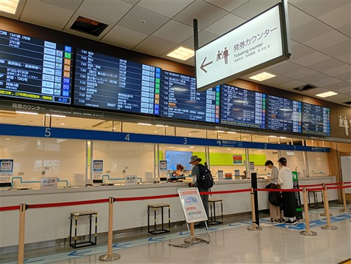
双葉サービスエリアで休憩。
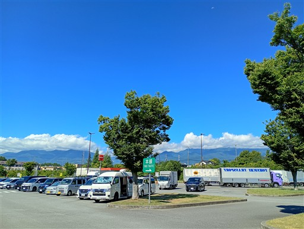
伊那バスターミナルで下車。
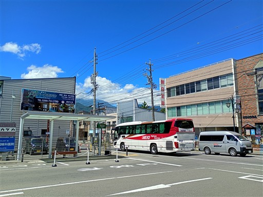
伊那の町並み。
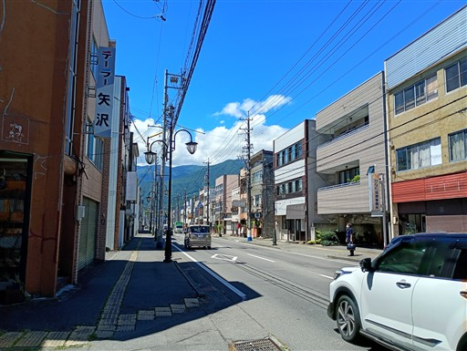
田村食堂で伊那名物のソースカツ丼を食べる。
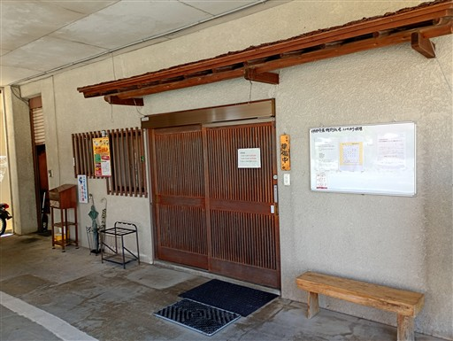
中央アルプスは雲の中かな？
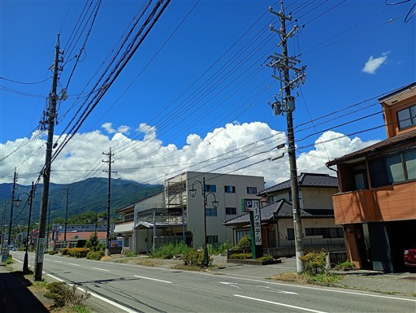
伊那駅に移動。ここでタクシーに乗る。
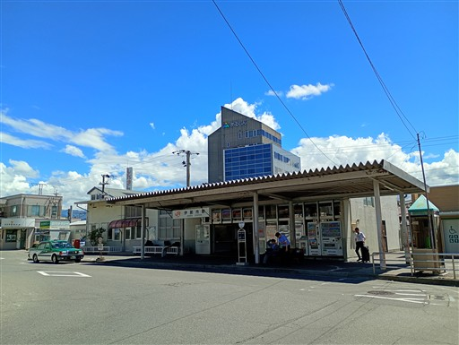
あっという間に登山口に到着。
桂小場登山口、標高1270m。
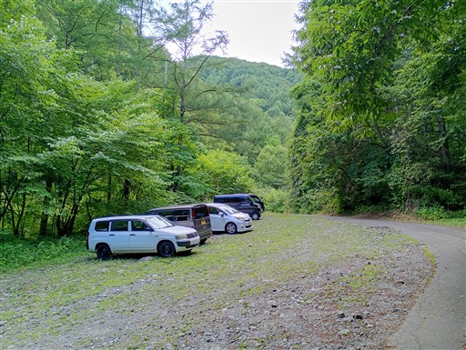
ここが登山道入口。
伊那側から木曽駒ヶ岳に登り上げる古くからある登山道で、クラシックルートと呼ばれている。
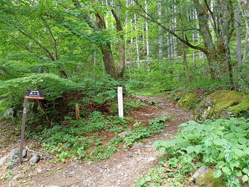
登山道は傾斜が緩く、非常に歩きやすい。
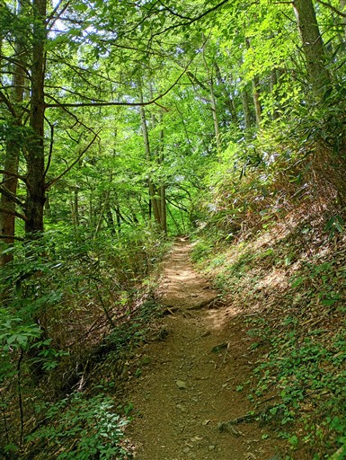
ぶどうの泉。この先にも水場はあるため、軽く水を飲むだけにしておく。
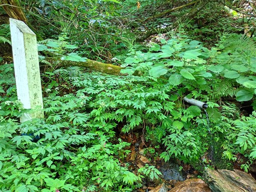
フシグロセンノウの鮮やかなオレンジ色の花が咲いている。
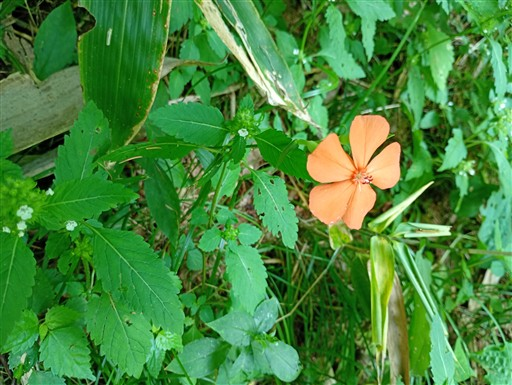
ヤマジノホトトギス。
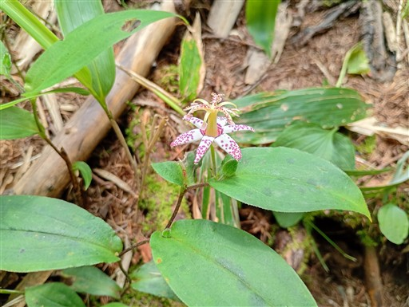
歩きやすい登山道は続く。
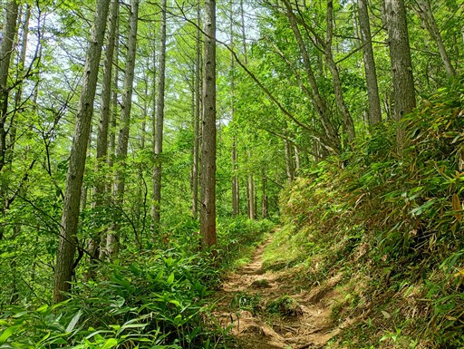
野田場に到着。宿泊予定の小屋にも水場があるため、ここでは軽く水を汲んでおく。
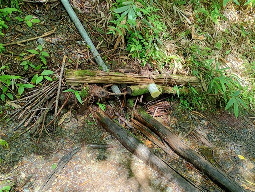
ベンチにチョウがたくさん止まっている。
たまにこういうのを見かけるが、何らか目的があって止まっているのだろう。
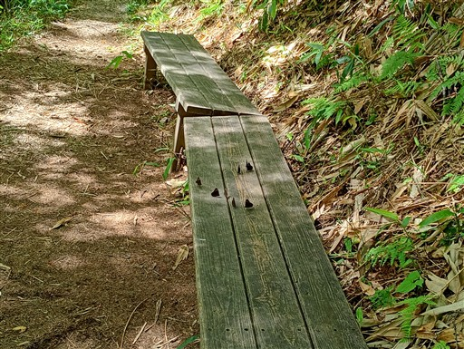
馬返しと呼ばれる場所に小さな祠がある。
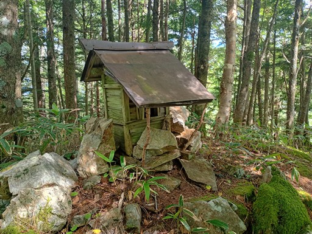
落雷事故の石碑。1975年の中学校の集団登山時に被災したもので、
幸いにも死者は出なかったらしい。
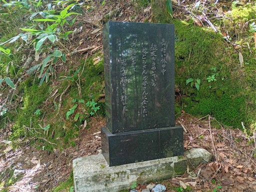
「奈良井川の源流 茶臼山行者岩の展望」と書かれた標識がある。
どれ？よく分からない。そもそも展望がほとんど広がらない。
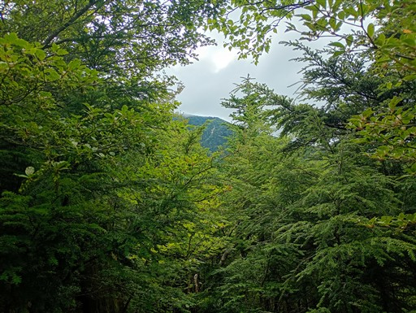
登山道は緩やかな尾根道になる。
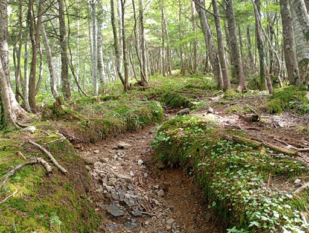
大樽小屋に到着。標高2070m。
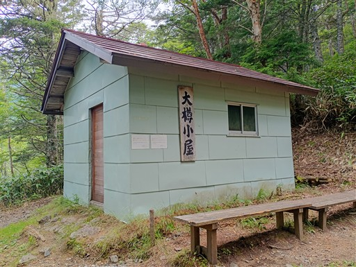
中は全体アルミシートが敷かれていて、きれいに清掃されている。
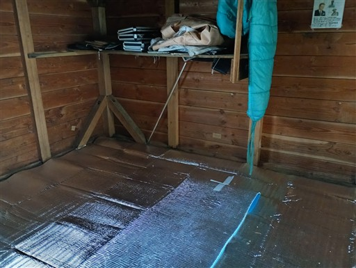
水場を探しに行くが、この先だろうか？かなりの笹薮だが…
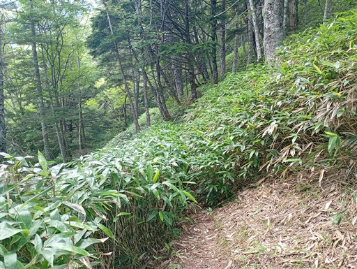
炊事場のようなものが落ちているが、付近に水は流れていない。
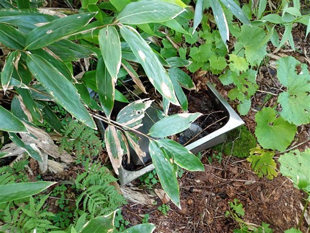
この沢を下ってみたが、全く水は得られなかった。困った。
持っているのは水300mLとお茶300mL。これで凌ぐか、野田場まで往復2時間水を汲みに行くか。
悩んだ末、前者を選択する。水場の少ない中央アルプスだが、初日から水に苦しめられるとは思わなかった。
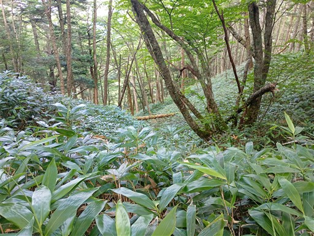
今回の山行は食事を作るのにも挑戦してみる。本日はマーボーナス。
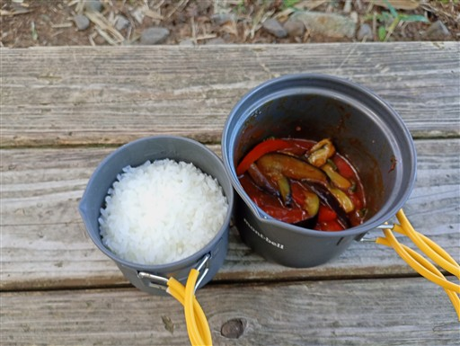